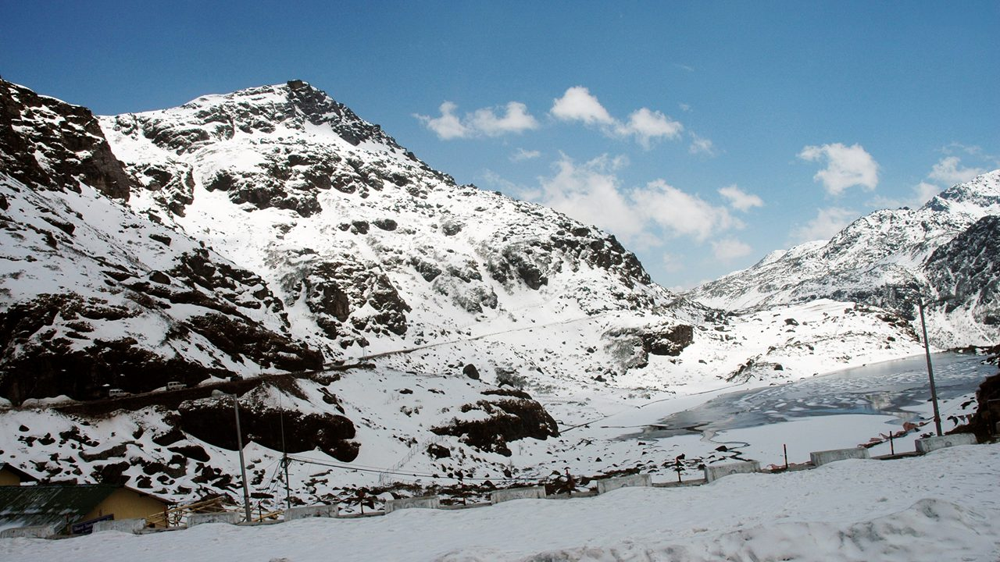
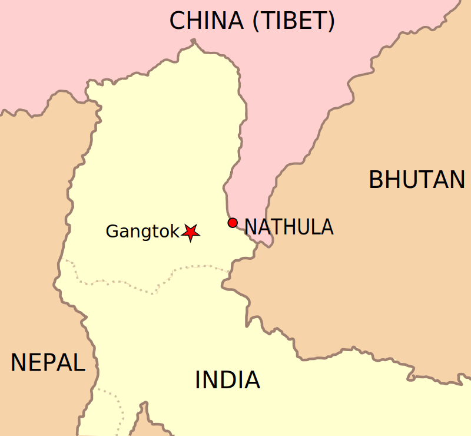
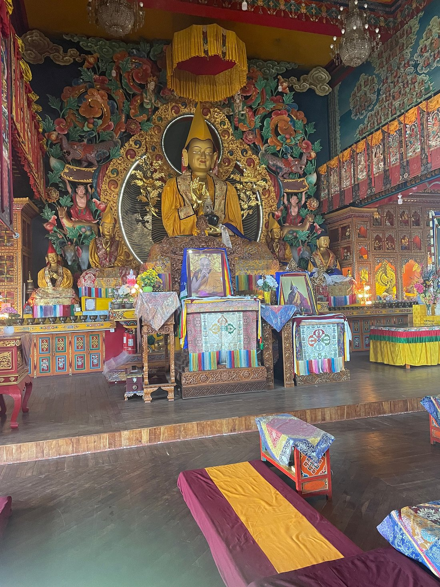
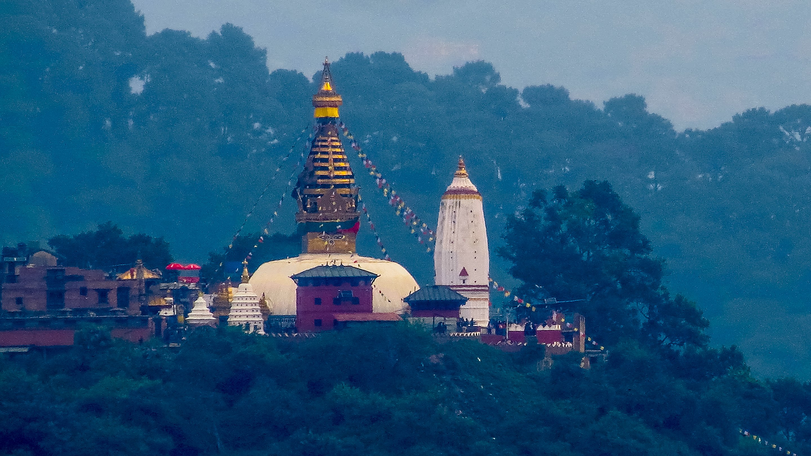
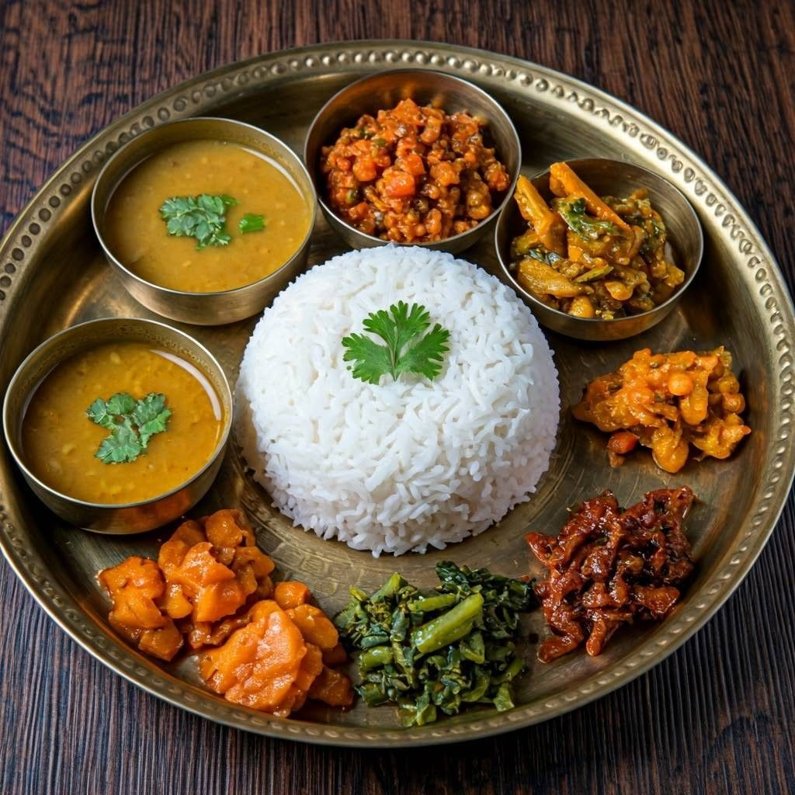
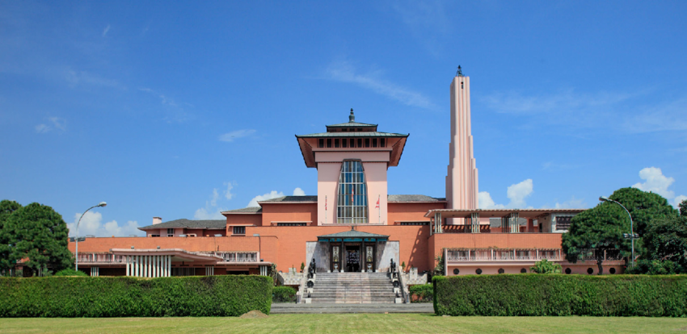

Travelogue: Hiking Up the Himalayas
What is it like?
Nepal in the summer time is beautiful.
I stayed in a hostel near Kathmandu, the capital of the nation.
Kathmandu is a beautiful city with an ancient history.

What to see first?
The Mountain View!
- Nathu La
Besides the beautiful mountains, there are so many lovely landscapes in Nepal Nathu La is a mountain pass of the Dongkya Range.
Nathu La can be accessed from the autonomous state of Tibet. Besides exploring the terrain, there is a historic Hindu temple and memorial, honoring Baba Harbhajan Singh.
- Kopan Monastery

Kopan Monastery is the home of hundreds of monks and nuns in the edges of Kathmandu. It is a Tibetan monastery, established in 1969. The nunnery houses up to 400 nuns. Kopan Monastery offers meditation retreats, courses, and private rooming.
- Swaymbhunath - The Monkey Temple
Swaymbhunath is an ancient religious structure in Kathmandu Valley, dating back to at least the third century BCE. It's a pilgrimage site for Buddhists around the world, and has thousands of visitors every year, both Buddhists and Hindus.
It is also known as the monkey temple, for the population of monkeys at the site.
-
Street Food
Nepal has a wide range of street food to offer!
- Backpacking
Nepal is friendly to backpackers looking to get immersed in the culture without staying off their feet for too long. The many temples, mountainous treks, and ancient cities offer an array of on-foot experiences. I seriously recommended adding nepal to your backpacking bucket list.
Wilson's Tips: Local Eats, Spots, Sights
As a renowned traveler, I cannot let you visit Nepal without telling you the must-tries, must-sees, and must-eats. My trip would not have been the same without these things.
- The Himalayas
I mean, it's pretty hard to not-see them! The mountain ranges are truly stunning. Even if you don't want to the (very) treacherous hike up the slope, there flights that fly along the mountains.
- Daal Bat
This is the national dish of Nepal! It's a hearty dish that earns its title with the first bite. Daal is a flavorful lentil soup that is served with white rice and side dishes. It can be vegan friendly, and should be tried no matter your palate.
 - Naranyanhiti Palace
Naranyanhiti Palace is a historical site integral to Nepali history. It was home to the monarchs of Nepal before the Royal Massacre in 2001. In the years that followed, the palace was turned into a museum, with the crown jewels on display.
 - Everest South Base Camp
It's big, it's famous, it's Everest! This is the base camp in Nepal; there is another in Tibet, the autonomous state in China. Fun Fact: the wind up there can reach up to 200 mph!
My name is Wilson Gachunga, and I am a travel blogger who has been documenting my journeys around the world.
I go to the strangest, hottest, coldest, oddest places you can find on our planet Earth. Follow my blog for updates as I wander all the world's wonders.